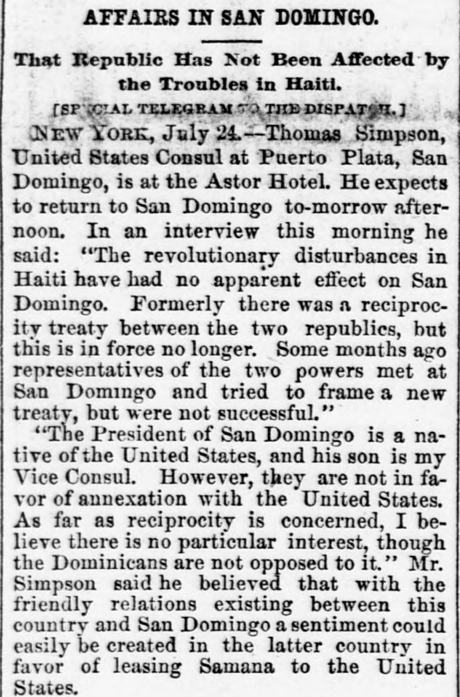

Some months ago representatives of the two powers met at San DomingoHace algunos meses representantes de las dos potencias se reunieron en Santo Domingo
Pittsburg Dispatch. Pittsburg [Pa.], July 25, 1891. Page 1. Published by Rook, O'Neil & Co. A daily newspaper, 1880–1923.Pittsburg Dispatch. Pittsburg [Pa.], 25 de julio de 1891. Página 1. Publicado por Rook, O'Neil & Co. Periódico diario, 1880–1923. View the originalVer el original

The Pittsburg Dispatch reported an interview with an observer regarding Dominican-Haitian relations, noting that Haitian political unrest had not disrupted Santo Domingo and that previous bilateral commercial treaties had lapsed. While Dominican officials opposed political annexation to the United States, the interviewee suggested that public sentiment might support leasing Samaná Bay for American use.El Pittsburg Dispatch informó sobre una entrevista con un observador acerca de las relaciones dominico-haitianas, señalando que los disturbios políticos haitianos no habían perturbado a Santo Domingo y que los tratados comerciales bilaterales previos habían caducado. Aunque los funcionarios dominicanos se oponían a la anexión política a Estados Unidos, el entrevistado sugirió que el sentimiento popular podría apoyar el arrendamiento de la bahía de Samaná para uso estadounidense.
FULL TEXT:TEXTO COMPLETO:
AFFAIRS IN SAN DOMINGO.ASUNTOS EN SANTO DOMINGO.
That Republic Has Not Been Affected by the Troubles in Haiti.Esa república no ha sido afectada por los problemas en Haití.
[SPECIAL TELEGRAM TO THE DISPATCH.][TELEGRAMA ESPECIAL AL DISPATCH.]
NEW YORK, July 24.—Thomas Simpson, United States Consul at Puerto Plata, San Domingo, is at the Astor Hotel. He expects to return to San Domingo to-morrow afternoon. In an interview this morning he said: "The revolutionary disturbances in Haiti have had no apparent effect on San Domingo. Formerly there was a reciprocity treaty between the two republics, but this is in force no longer. Some months ago representatives of the two powers met at San Domingo and tried to frame a new treaty, but were not successful."NUEVA YORK, 24 de julio.—Thomas Simpson, Cónsul de los Estados Unidos en Puerto Plata, Santo Domingo, está en el Astor Hotel. Espera regresar a Santo Domingo mañana por la tarde. En una entrevista esta mañana dijo: «Las perturbaciones revolucionarias en Haití no han tenido efecto aparente en Santo Domingo. Antiguamente había un tratado de reciprocidad entre las dos repúblicas, pero este ya no está en vigor. Hace algunos meses representantes de las dos potencias se reunieron en Santo Domingo y trataron de elaborar un nuevo tratado, pero no tuvieron éxito.»
"The President of San Domingo is a native of the United States, and his son is my Vice Consul. However, they are not in favor of annexation with the United States. As far as reciprocity is concerned, I believe there is no particular interest, though the Dominicans are not opposed to it." Mr. Simpson said he believed that with the friendly relations existing between this country and San Domingo a sentiment could easily be created in the latter country in favor of leasing Samana to the United States.«El Presidente de Santo Domingo es nativo de los Estados Unidos, y su hijo es mi Vicecónsul. Sin embargo, no están a favor de la anexión con los Estados Unidos. En lo que respecta a la reciprocidad, creo que no hay interés particular, aunque los dominicanos no se oponen a ella.» El Sr. Simpson dijo que creía que con las relaciones amistosas existentes entre este país y Santo Domingo un sentimiento podría crearse fácilmente en el último país a favor de arrendar Samaná a los Estados Unidos.
This collection gathers the coverage of the Dominican Republic in the American press, in the order it was published.Esta colección reúne la cobertura de la República Dominicana en la prensa estadounidense, en el orden en que se publicaron.